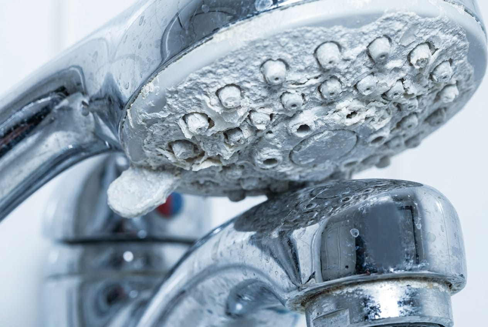
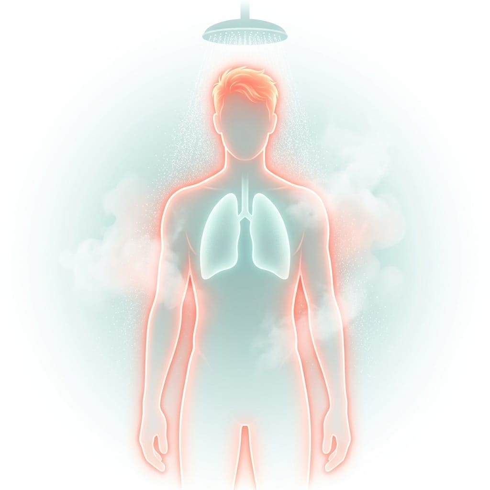
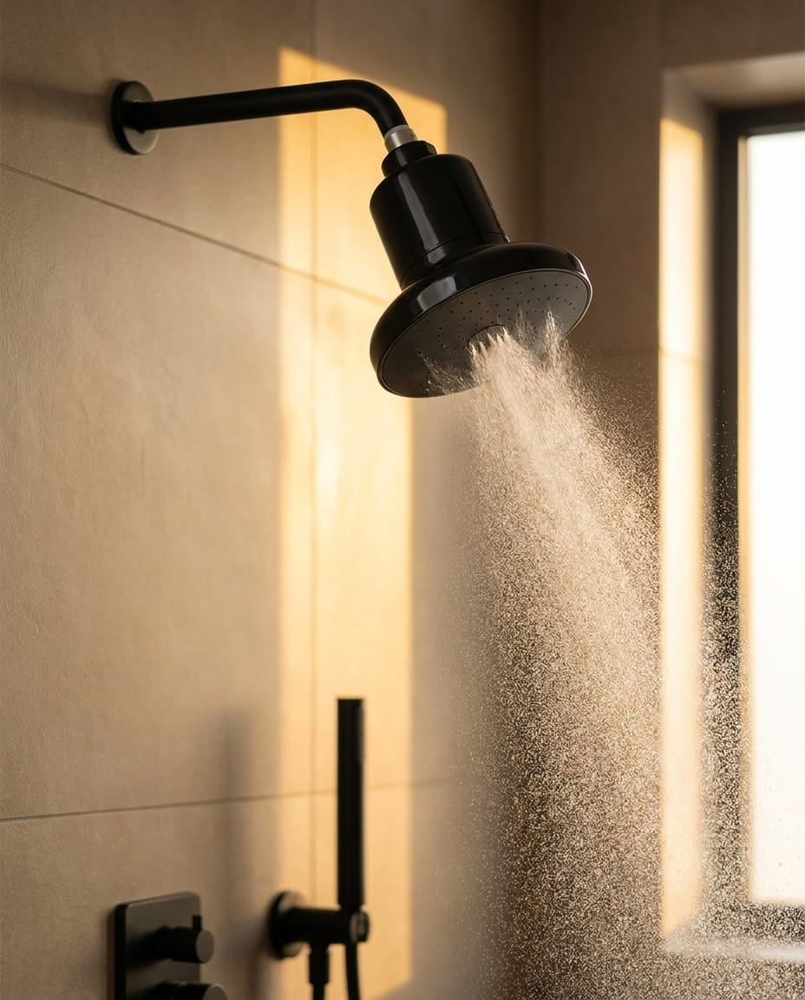
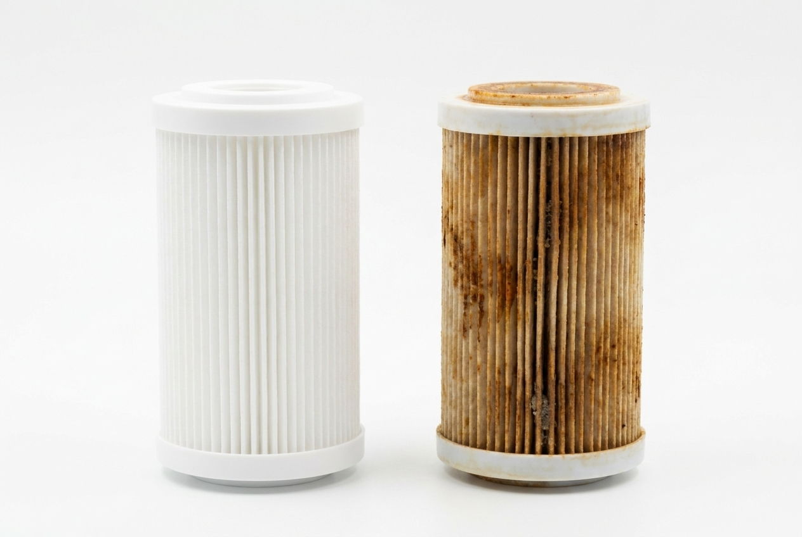

Shower Water Score — ZIP
This isn't a water safety problem — your water is legal to drink. It's a water chemistry problem. And chemistry doesn't care how good your shampoo is.
Analysis Results

None of this shows up in a glass of water. All of it shows up in your mirror.
Your Water Profile
How your water scores across the board
The Part Nobody Tells You
You filter the water you drink. You absorb the water you shower in.
Think about the water in your home for a second. The glass you drink passes through your stomach, which was built to handle it. But the shower is a different exposure route entirely — three of them, actually:

1 Your skin — all 20 square feet of it.
Skin is your body's largest organ, and warm water works against it twice: heat opens pores and increases permeability right as the water arrives, and chlorine strips the lipid barrier — the thin layer of natural oils that holds moisture in. That "tight, squeaky" feeling after a shower isn't clean. It's your barrier, rinsed off.
2 Your lungs — because hot water turns chlorine into steam.
3 Your hair — soaked, swollen, and coated.
Your Chlorine Exposure
over your body, every year
Why You're Feeling It
You already gave us the evidence. You just didn't know it was evidence.
The Part Nobody Calculates
You're not saving money by waiting. You're spending it invisibly.
The most expensive thing in your shower isn't on the shelf. It's coming out of the wall.
The Fix Isn't Another Product
You can't out-condition your water. You can only filter it.
Built For Water Like Yours
Based on your water profile and your answers, here's your setup:

Free shipping · 2-minute tool-free install · Fits standard US shower arms
Get My Sift →Shower with Sift. If your hair and skin don't feel the difference, send it back for a full refund — we'll even cover return shipping.
See What It Caught
Words can claim anything. Filters can't. This is a Sift cartridge after three months in hard water — every bit of that discoloration is mineral scale and sediment that would otherwise have ended up on your hair, your skin, and your color.

From Hard-Water Households
Compare Your Options
| Sift | Whole-home softener | Keep showering in it | |
|---|---|---|---|
| Upfront cost | $2,000–$6,000 | $0 today | |
| Filters chlorine at the shower | ✓ | ✗ | ✗ |
| Reduces minerals & sediment | ✓ | ✓ | ✗ |
| Install | 2 min, no tools | 1–2 days, plumber | — |
| Works in rentals | ✓ | ✗ | ✓ |
| Annual cost of inaction | — | — | ~$540 in neutralized products |
The Guarantee
You've spent more than on a single salon visit fixing what the water did. This one ends the cycle — or it's free.
Try Sift Risk-Free →Common Questions
Before you decide.
Will it lower my water pressure?
No — most customers report equal or better pressure from the engineered spray plate.
How long does a filter last?
Is it hard to install?
If you can unscrew a bottle cap, you're qualified. Standard US shower arms, no tools, no plumber.
I rent — can I take it with me?
Yes. Unscrews in seconds; your old head goes back on, and your landlord never knows.